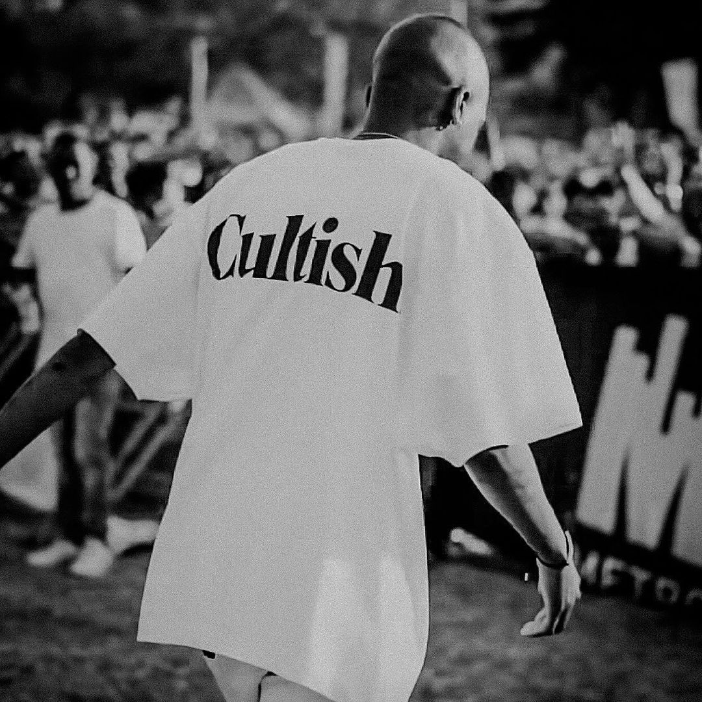

Hip hop and fashion go hand in hand together, the beautiful relationship between fashion and hip hop has
given birth to South African brands that have left their mark
Valhalla Hotf
The Johannesburg- based brand has been making the rounds, building up its name and
reputation in the hip-hop clothing scene. They got involved in the pop fashion scene vis pop-ups at
Sneaker Exchange and collaborating with Lev's Haus of Strauss on a 1 of 1 piece.
Valhalla curtesy of @valhalla_hoft
Moving away from their bags, they also have a wide variety of different clothing
such as the Valhalla and cotten fest shirts. Their collaboration with Cotton fest led their brand to
being warn by the likes of Uncle Vinny and Major League Djz.
Valhalla and Cotton fest curtesy of @valhalla_hoft
Valhalla Hotf has made a huge contribution to the hip hop fashion scene. They
have defenently left a significant mark on South African fasion scene.
Cultish supply
Cultish is probably the biggest brand out of the three, that you may have
recognised. It was conceptualised, designed and manufacture in Cape Town, South Africa. They start of
with very minimalistic design focusing on promoting the brand name with sleek and clean designs

Cultish shirt curtesy of @cultishofficial
They further moved on to creating clothes based on the climate change protests, but they put their own
spin on it with the Vemeer protest and Mona Lisa protest clothes
Vermeer protest shirt curtesy of @cultishofficial
Cultish has left a massive mark on the South African fasion scene and has grown to become an
internationally recognised brand.
Artelier
Artelier is a South African premium archive fasion lable that specialises in workwear & utility. Artelier
is a breath of fresh air in the South African fashion scene, providing a unique style to its wearer
Artelier, photographed by Skudu Content, curtesy of @Artelier_official
The exciting thing about Artelier is that they are making styles such as tech-wear and gorpcore
styles more popular in South Africa exposing us to a completely new dynamic of clothing.
Artelier, photographed by Skudu Content, curtesy of @Artelier_official